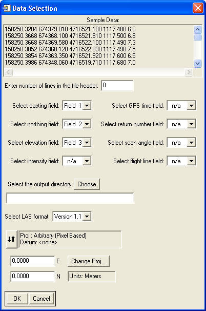

Using "Convert Ascii Data to LAS"
This tool is meant to convert ascii data in one or more text files to LAS format data files.
Usage:
- Select the input file or files to convert.
- In the "Select Returns" screen, select the return number that is associated with each file. If a given file contains multiple returns, select the "In File" option.
- Set the various parameters for the input file(s):
- The "Sample Data" field shows the first few lines of the input text file, to assist in determining field (column) locations.
- Set the number of lines (if any) of the header in the text files.
- Set the fields corresponding to the easting, northing, and elevation coordinates. (These are required.)
- If available, set the fields corresponding to intensity, time, return number, scan angle, and flight line.
- Select the output directory. The output files will be saved in the new directory with the same base name as the input files.
- Select which LAS format to use for the output files.
- Set the projection of the data.
Back to LidarTools home page.
Notes:
- This tool assumes that all of the input text files have the same format.
Comments?
• Idaho State University • Boise Center Aerospace Laboratory • 322 E. Front Street #240 • Boise, Idaho • 83702 •